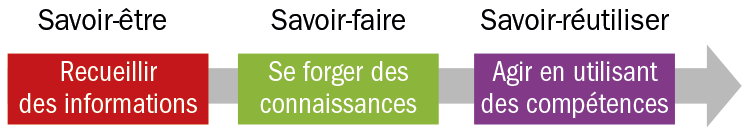
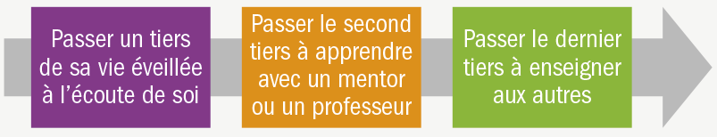
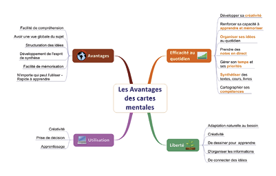
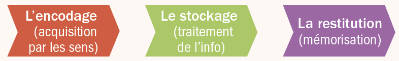
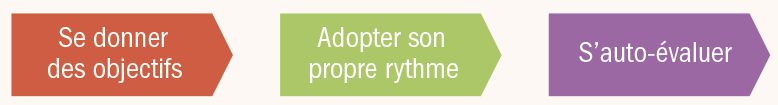
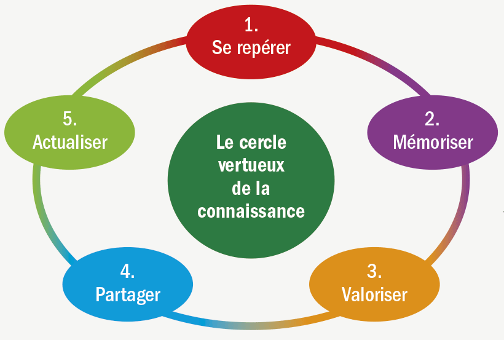

01 - Comment et pourquoi apprendre tout au long de la vie ?
« Il n’est jamais trop tard pour apprendre »
Slogan de l’Union Européenne pour la formation
Aujourd’hui, les connaissances et les informations sont partout présentes.
• Nos apprentissages, nos emplois, nos vies sociales en sont bouleversés.
• Les données (Data) et le numérique (Digital) deviennent à la fois les moteurs et le carburant de l’économie de la connaissance.
Dès lors que la totalité des informations
est numérisée et accessible sur Internet,
la compétence et l’intelligence deviennent collaboratives. On apprend et on travaille :
• en tout lieu (en France ou ailleurs) ;
• à tout moment (le jour ou la nuit) ;
• et avec tout le monde (par exemple wikipedia pour lequel chacun peut collaborer)
La compétence de base à entretenir
est votre capacité à apprendre, désapprendre, réapprendre tout au long de la vie.
En résumé, apprendre c’est mêler 3 types de savoirs :

02 - Prendre le risque d’apprendre
« Celui qui ne progresse pas chaque jour, recule chaque jour »
Confucius
L’estime et la confiance en soi
Pour apprendre il faut se connaître, se maîtriser, s’apprécier. Cela permet de s’affranchir
des conditionnements de l’enfance, devenir
soi-même, s’ouvrir au monde, et ainsi gagner
en réussite, persévérer dans ses choix et rester focalisé sur ses objectifs quels que soient
les obstacles et les influences extérieures.
L’autodétermination est la connaissance de ses propres forces et limites, elle permet de développer
sa certitude d’être capable et efficace pour réussir.
Il est important de dépasser blocages et préjugés :
• hérités de l’enfance (« tu es incapable, maladroit…») ;
• construits à l’école (« je suis nul en maths ») ;
• de notre vie sociale ou professionnelle (« vous êtes incompétent, vous n’y arriverez pas… ») ;
car ils nous empêchent d’apprendre en confiance.
La peur d’échouer : peut-on transformer l’erreur en progrès ?
L’erreur et l’échec font partie du processus d’apprentissage.
L’erreur n’est pas une faute, admettre qu’on a pu
se tromper c’est se mettre en position d’apprendre puis de réussir ensuite.
Contrôlée et admise comme telle l’erreur permet
de comprendre et donc de mieux se connaître
pour progresser.
Apprendre à gérer ses échecs pour admettre ses erreurs
La formation professionnelle, tout comme l’école,
sont des lieux d’entraînement et de réflexion
où chacun doit s’exercer sans crainte de paraître inexpérimenté ou incapable.
Si l’apprenant ne craint pas les erreurs
il n’a plus besoin de se protéger, il sait que ni lui,
ni personne dans le monde, ne détient
toutes les connaissances/compétences.
Apprendre c’est être humble et patient :
il faut semer avant de récolter.
La frustration peut être structurante : pour apprendre, il faut résister à la tentation d’abandonner et intégrer l’effort comme une discipline sur soi, accepter
de différer la satisfaction de certains plaisirs,
de prendre sur son temps ou ses loisirs pour étudier, travailler et par la suite progresser.
03 - Changer pour apprendre
« Je ne perds jamais. Soit je gagne, soit j’apprends »
Nelson Mandela
On n’a jamais fini d’apprendre, apprendre c’est être mobile et accepter de changer.
L’apprentissage est une activité sociale, on apprend des autres, avec les autres et parfois pour les autres. Apprendre c’est rester humble, admettre que, même parvenu à l’âge adulte, on ne sait pas tout.
La curiosité est le moteur des apprentissages
• Elle libère : diminution de l’anxiété liée à la peur de l’inconnu, stimulation de la créativité, de l’apprentissage et de la prise de décision.
• Elle autorise : les facultés d’adaptation, les capacités d’analyse et le sens critique.
• Elle élimine : les convictions auto-limitantes (je ne pourrai pas, c’est trop dur ou compliqué, je ne suis pas doué…).
• Elle réveille (et révèle) l‘autodidacte qui sommeille en chacun de nous.
La curiosité permet d’apprendre. On peut trouver par hasard des informations utiles qui permettront de relier d’anciennes connaissances. L’apprentissage est donc aussi un vagabondage intellectuel, un espace de liberté dans l’océan des connaissances.
Apprendre c’est savoir se projeter dans l’avenir…
Pour garder l’équilibre il est nécessaire de poser un regard positif vers le futur, même complexe ou difficile celui-ci n’est jamais totalement bouché.
... tout en sachant prendre certains risques :
• d’être pris en défaut d’ignorance alors qu’on est un adulte,
• de ne pas savoir, d‘hésiter, de ne pas ou de mal comprendre ;
• de paraître ignorant (ou ridicule) ;
• d’être dévalorisé ou moqué ;
• d’entrer dans des territoires inconnus avec certains dangers.
… tout en commettant parfois des erreurs : apprendre c’est franchir une série d’obstacles !
L’erreur n’est pas une faute, tout au contraire elle révèle des savoirs et le droit à l’erreur doit être reconnu.
Elle a deux avantages :
• elle permet de découvrir quand et pourquoi on s’est trompé ;
• elle offre la possibilité de mieux se connaître et de gagner en autonomie.
Le plaisir d’apprendre
On peut apprendre sous la contrainte mais cela n’est ni efficace ni motivant et empêche une réelle maîtrise ou autonomie.
Quelques pistes pour retrouver désir et plaisir d’apprendre
• Faire de sa vie une œuvre, donner du sens à ce que l’on fait.
• Relever des défis, ne pas confondre désir de savoir et désir d’apprendre.
• Imaginer sa réussite et les résultats de ses progrès et découvertes.
• Oser apprendre et partager ses découvertes, avoir le courage de dire « je ne sais pas » et s’émanciper en apprenant…
04 - Apprendre pour entrevoir l’avenir
« L’intelligence ne se mesure pas des pieds à la tête mais de la tête au ciel »
Napoléon Bonaparte
Rien n’est permanent dans la vie, tout est en flux et mouvement. Ce qui était vrai hier ne l’est parfois plus aujourd’hui... la seule certitude qui demeure est le changement.
La formation est donc à la fois une anticipation et une projection dans votre avenir social, professionnel ou économique.
Pour apprendre il faut imaginer son futur (spéculer) planifier, anticiper et dresser son propre plan de développement (le PIF).
Apprendre, une histoire de PIF
Construisez votre Plan Individuel de Formation (PIF)
1. Élaborez votre projet professionnel ou social, déterminez vos priorités et axes de progrès.
2. Posez-vous des questions (quand, où, pourquoi, comment apprendre).
3. Prenez conscience de vos talents et de vos points faibles.
4. Adoptez un projet en accord avec votre vie.
5. Mettez en œuvre sans tarder votre plan de formation.
Bâtissez ce projet S M A R T (« intelligent » en anglais)
Simple
(il doit tenir sur une simple feuille de papier A4).
Mesurable
(vous devez pouvoir constater des progrès réguliers).
Atteignable
(des objectifs ambitieux mais pas hors de portée).
Réaliste
(votre environnement professionnel doit compter).
Temporellement défini
(avec un début, des étapes, une fin).
Mieux apprendre pendant son travail
Le travail peut être une source quotidienne d’apprentissages mais pour apprendre avec profit à son travail il est nécessaire que l’entreprise cultive elle-même un terrain favorable aux apprentissages :
• une qualité des interactions sociales : le tutorat, le mentorat, des pratiques de collaboration et d’entraide ;
• une progression dans la complexité des tâches confiées, la possibilité de se concentrer sur une activité particulière ;
• une confrontation avec l’incertitude et des problèmes à résoudre qui obligent à « faire autrement » ;
• un management à l’écoute, coopératif et délibératif ;
• la production de signaux tangibles de reconnaissance des nouvelles acquisitions (encouragement, promotion, valorisation des efforts éducatifs…).
05 - Prendre soin de soi pour apprendre
« Créer c’est se souvenir »
Victor Hugo
Le cerveau : organe le plus complexe du corps
humain, il saura apprendre si vous savez le ménager et l’entraîner :
• il est sociable : interagissez et échangez avec les autres ;
• il est sportif : la marche ou le vélo permettent de mettre en mouvement ses idées ;
• il aime l’air pur : se préserver de la pollution (particules fines du diesel notamment) ;
• il doit voir et (re)ssentir : faites contrôler votre vue, 80 % des informations utilisées par votre cerveau proviennent de la vision. Contrôlez votre vue tous les 3 ou 4 ans et après 60 ans 1 fois par an ;
• il doit éviter le stress inutile : un bon sommeil aide aux apprentissages ;
• il n’apprécie pas les drogues : abandonnez les médicaments ou les drogues censés vous aider à dormir, à travailler ou à mémoriser ;
• il est un gros consommateur avant d’être un bon producteur : il absorbe au repos 20 % de l’énergie des aliments ! Variez donc votre alimentation et privilégiez : poisson, noix, amandes, germes de blé, choux, huile d’olive, soja, chocolat, épices. Évitez les sucreries, les charcuteries, ne mangez pas trop, évitez l’alcool et le tabac, buvez café et thé vert (avec modération).
Voir ID Reflex’ Alimentation et Santé
Adoptez la formule 0 - 5 - 30 pour une bonne forme :
0 tabac ou alcool, 5 fruits et légumes par jour,
30 minutes d’exercice physique
Le cerveau doit rester concentré, pour décider :
• il considère les options possibles ;
• il analyse rapidement les gains ou pertes pour chaque option ;
• il choisit, valorise ce choix en éliminant les autres options ;
• il se projette dans le choix et évalue les récompenses futures.
Quelques trucs pour rester concentré |
• Créez une bulle autour de vous • Épurez votre espace de travail • Maintenez un environnement calme et sain, aéré |
• Apprenez sans machine, limitez le temps passé à communiquer (mail, téléphone…), désactivez vos appareils (ordinateur, téléphone, télévision…) |
• Prenez le temps de réfléchir et de vous reposer • Faites de votre travail ou apprentissage un jeu |
• Ne faites qu’une chose à la fois • Commencez par le plus difficile • Travaillez une heure d’affilée |
• Prenez une courte pause toutes les heures (marchez dehors !) • Prenez du recul • Prenez du bon temps avec vos proches |
• Méditez • Oubliez et détendez-vous |
06 - Prendre le temps d’apprendre
« L’apprentissage est un bon client…il paie toujours ! »
Le temps consacré à apprendre n’est jamais du temps perdu ! C’est le meilleur investissement qu’on puisse réaliser : le capital éducatif est bien supérieur aujourd’hui au capital financier, pour une entreprise comme pour un individu.
La formulation de vos apprentissages
Capital de savoirs = concentration X temps passé
Si apprendre prend du temps, il faut donc apprendre
à maîtriser son temps.
Quelques lois pour connaître et gérer son temps |
||
Lois |
Énoncés |
Conseils |
Loi |
20 % de nos activités produisent 80 % de nos résultats |
Consacrez vous à l’essentiel, oubliez l’accessoire |
Loi de Parkinson |
Une tâche finit par occuper toute la place qu’on lui donne |
Imposez-vous des dates butoir, ne vous accordez pas trop de délais |
Principe |
Nous allons d’abord vers le plus facile ou le connu |
Ne procrastinez pas, commencez par le plus difficile |
Loi |
Toute chose prend plus de temps que prévu |
Ne sous-estimez pas le temps nécessaire à la réalisation d’une tâche |
Loi |
Au delà d’un certain seuil on ne gagne plus en qualité |
Attention à ne pas être trop perfectionniste et vous perdre dans les détails |
Loi |
Le temps paraît moins long quand on est passionné par une tâche |
Appuyez-vous sur vos centres d’intérêts, exercez une activité qui vous plaît |
Extrait et adapté du dépliant ID Reflex’
« Gestion du temps » de Béatrice Carrot
Jeu : Entraînez-vous à surprendre votre cerveau
Que comprenez-vous de ce texte ?
Sleon une édtue de l’Uvinertisé de Cmabrigde, l’odrre des ltteers dnas un mot n’a pas d’ipmrotncae, la suele coshe ipmrotnate est que la pmeirère et la drenèire soit à la bnnoe pclae. Le rsete peut êrte dans un dsérorde ttoal et vuos puoevz tujoruos lrie snas porlblème. C’est prace que le creaveu hmauin ne lit pas chuaqe ltetre elle-mmêe mias le mot comme un tuot.
Réponse : inversez la seconde et l’avant-dernière lettre, le cerveau y parvient en général facilement.
Combien de temps faut-il consacrer à apprendre ?
On n’apprend pas le chinois en 20 heures mais on peut progresser d’un niveau d’anglais ou réviser des notions de français ou d’informatique sur une durée courte.
L’important n’est pas le temps total passé à apprendre mais bien plus le rythme (régulier) de vos apprentissages.
Il sera préférable de passer 30 minutes tous les jours à apprendre plutôt que de suivre un stage long de 3 mois une fois tous les cinq ans.
Comment trouver 30 minutes par jour pour apprendre ?
• Remplacez 30 minutes de TV (ou de Facebook) par une demi-heure de lecture (journaux, romans, articles techniques...) avant de vous coucher.
• Lisez, apprenez et entraînez-vous dans les transports (ou écoutez des émissions scientifiques en voiture en les podcastant).
• Prenez des notes et apprenez chaque jour de vos activités, de vos rencontres et de votre vie
(notez toutes vos découvertes dans un journal de bord, cherchez à résoudre de nouveaux problèmes).
• Travaillez autrement ou dans un autre cadre, soyez à l’écoute de votre environnement et des changements autour de vous.
Comment maîtriser votre temps en règle générale ?
• Ayez une vue globale de votre semaine (faites un planning).
• Fixez-vous des objectifs, une stratégie et faites des points intermédiaires.
• Ordonnez vos priorités, regroupez les activités similaires.
• Maintenez à distance les personnes ou objets qui « mangent » votre temps.
• Organisez vos documents, votre bureau, votre ordinateur.
• Faites des pauses régulières et « coupez » vraiment quand vous ne travaillez pas.
• Faites-vous aider pour certaines tâches, apprenez à déléguer.
• Demandez à un proche de vous soutenir, de vous « coacher ».
La règle des trois tiers de vie
Pour apprendre mieux et plus efficacement vous pouvez diviser votre temps éveillé en 3 périodes :

07 - Être réalisateur et auteur de ses apprentissages
Apprendre c’est avancer pour se mettre en « mode » projet
Pour de nouveaux savoirs |
Pour surmonter des obstacles |
Pour identifier ses acquis |
Pour conduire |
Pour reprendre confiance en soi |
Pour la capacité |
L’illusion du savoir
• Une personne passive apprend mal (ou pas du tout).
• Il n’y a pas d’apprentissage sans rétroaction (vérification des progrès).
• Il faut tester la fiabilité de ses connaissances sinon on reste dans l’illusion du savoir.
Comment devenir auteur de ses apprentissages ?
Tableau à compléter |
|
Actions |
Vos résultats |
Apprendre et réciter par cœur |
|
Réaliser un plan de ses idées clés |
|
Prendre des notes ou rédiger |
|
Expliquer aux autres |
|
Enseigner aux autres pour clarifier, ordonner, simplifier |
|
Communiquer dans une langue étrangère |
|
Relire des notes dans sa tête |
|
Mettre en pratique ce qu’on a appris |
|
L’apprentissage mutuel ou comment apprendre en famille
« Enseigner c’est apprendre deux fois »
Joseph Joubert
Si vous avez de jeunes enfants c’est une formidable opportunité pour apprendre (pour eux et pour vous !) :
• vous allez pouvoir les aider tout en apprenant avec eux et d’eux ;
• les devoirs et leçons à la maison (que certains parents considèrent à tort comme une punition ou un « pensum ») sont des temps importants :
• pour votre enfant à qui ils démontreront que les savoirs de l’école et ceux des parents se recoupent et se confortent ;
• pour le parent à qui ce temps en commun offre des moments de complicité et de transmission au-delà du simple cadre matériel et affectif ;
• pour le travailleur qui en expliquant certaines notions met à jour et clarifie lui-même de facto ses propres connaissances.
08 - La boîte à outil : quelle stratégie apprenante ?
Votre Plan Personnel d’Action (PPA)
« J’écris pour savoir ce que je pense »
François de Closets
Apprendre, une rencontre intime entre :
• a. un projet : vos envies personnelles (intimes) de progrès ;
• b. une ou des personnes : un mentor, un collègue, un proche ;
• c. une volonté et de la persévérance.
Les stratégies apprenantes les plus efficaces |
|
1. Bien choisir ses co-équipiers |
|
Un coach professionnel (formateur) |
Un proche ou un collègue |
2. Trouver un mentor (un modèle positif et aidant) |
|
Pour faciliter la prise de risque |
Pour accroître sa confiance |
3. Étendre son réseau (échanger c’est apprendre) |
|
Communiquer, aider les autres |
S’ouvrir aux autres |
4. Ne pas craindre d’échouer / Surmonter ses difficultés |
|
Tirer parti de ses échecs |
Rebondir et tracer de nouveaux chemins |
Apprendre de ses erreurs |
Ne pas se décourager (résilience) |
5. Prendre des risques calculés / Accepter l’incertitude |
|
Comparer les risques face |
Analyser les opportunités, |
6. Apprendre de nouvelles choses |
|
Faire autrement, |
Tout savoir nouveau, |
7. Apprendre à gérer les 4 C |
|
La Collaboration Apprendre et travailler |
La Communication Communiquer et exprimer |
Les Conflits Gérer les conflits et dissensions |
Les différences Culturelles Accepter et s’enrichir des différences |
Apprendre en 4 étapes simples
09 - La boîte à outils : des cartes pour apprendre ?
« La créativité c’est simplement établir des connexions entre les choses »
Steve Jobs
Le Mind Mapping (ou carte mentale) et les apprentissages
Les cartes mentales sont des outils efficaces
de prise de notes, de classement et de mémorisation de nouvelles informations.
Il s’agit d’une méthode graphique et logique
pour consigner des idées afin de « cartographier »
les informations sur un thème quelconque.
Toutes les cartes mentales
• Sont construites autour d’un noyau central
et sont déployées horizontalement.
• Mettent en œuvre des lignes, des symboles,
des mots, des couleurs et des images illustrant
des idées ou informations simples et faciles
à mémoriser.
• Relient des mots clefs par des branches.
Votre première carte mentale en 3 temps et 4 mouvements
• Procurez-vous du matériel (1 feuille papier A4 ou A3 tenue à l’horizontale, 1 crayon papier ou des feutres de couleurs).
• Dessinez une image au centre ou donnez un titre.
• Dessinez des branches principales (les sous-titres).
• Dessinez ensuite des banches secondaires
en partant des branches principales.
Pour produire votre première carte mentale
• Prenez une image centrale, une idée-force, un thème.
• Dessinez des branches rayonnant depuis l’image centrale (une seule idée – mot-clé – par branche).
• Utilisez des mots-clés.
• Mettez de la couleur (3 couleurs au moins) et illustrez.

Plus de méthodes et d’informations dans le dépliant ID Reflex’ Mind Mapping Arnaud Franel Éditions.
10 - La boîte à outils : lire et retenir
La lecture rapide et efficace
C’est par la lecture que circulent la majorité des informations que nous retenons. Une lecture rapide et fluide décuple le plaisir et l’efficacité d’apprendre.
La lecture est supérieure à toute autre forme de média.
• Le contenu d’un journal TV de 30 minutes tient
dans 5 minutes de lecture d’un journal papier.
• Passer plus de 5 heures par jour devant la télé
c’est risquer de ne plus pouvoir ni savoir lire
après quelques années.
A. Lisez souvent, dans votre tête et non pas à haute voix.
B. Ne lisez pas chaque mot mais des groupes de mots.
C. Fixez-vous des objectifs face à vos lectures :
• un moment et un temps dédié chaque jour pour lire ;
• un nombre de livres ou de revues à lire dans un temps fixé ;
• être plus concentré en prenant des notes (ou des annotations).
D. Prenez des notes en lisant (à la main, surlignez ou résumez).
E. Mesurez vos progrès :
• suis-je plus et mieux concentré ?
• est-ce que je retiens mieux ?
• est-ce que je comprends plus vite et mieux ?
• en combien de temps vais-je lire ce livre ?
F. L’entraînement fréquent vous rendra plus efficace en lecture.
Une mémoire performante pour ne rien oublier
Mémoriser, un mouvement en 3 étapes

a. l’encodage : acquérir de nouvelles informations en provenance de nos sens : la vue, l’ouïe… ;
b. le stockage : les informations sensorielles sont ensuite traitées pour être mises en mémoire ;
c. la restitution (directe et explicite ou indirecte et implicite) : période durant laquelle le cerveau
va répéter automatiquement une information jusqu’à ce qu’elle soit suffisamment ancrée
dans notre mémoire pour être retenue.
Attention ! Sans rappel une information n’est pas mémorisée !
Quelques éléments pour mieux retenir
• L’intention : pour apprendre et retenir il faut le vouloir.
• L’ordre : rangez dans l’espace/le temps, par des histoires…
• L’association : liez les notions entre elles pour les retenir.
• L’imagination : visualisez, « filmez » ce que vous apprenez.
• La répétition : pour qu’une information s’inscrive dans votre mémoire il faut l’apprendre, la réactiver (réviser) 24 heures plus tard (de préférence le soir avant le coucher) puis au bout d’1 semaine et encore 1 mois plus tard.
• L’entraînement : retenez par cœur poèmes, codes d’accès…
Écrire pour se souvenir : apprendre c’est aussi noter
• Numérotez et classez les documents, faites des fiches.
• Prenez des notes classiques ou graphiques (mind map).
• Utilisez des abréviations, relisez vos notes dans les 24 h.
11 - La boîte à outils : gérer et organiser
« Pour qu’une chose soit intéressante, il suffit de la regarder longtemps. »
Gustave Flaubert
Traiter vos informations et vos connaissances…
Les 6 étapes pour gérer et valoriser des informations |
|
A. Collecter les données |
D. Présenter l’information |
B. Organiser l’information |
E. Collaborer autour de l’information |
C. Évaluer l’information |
F. Sécuriser l’information |
A. La collecte des données
• La lecture sur écran est la plus usuelle aujourd’hui mais elle est un peu moins rapide que sur papier.
• Pour lire sur écran, 3 techniques sont utiles : le scannage, le repérage, la lecture en diagonale ou zapping.
B. L’organisation de l’information
• Utiliser une nomenclature (code de rangement) pour classer vos données.
• Rassembler les informations de même nature.
• Éviter les systèmes de classement trop complexes.
C. L’évaluation de l’information
• Déterminer la fiabilité des informations (quel auteur, qui publie, pourquoi, de quand date l’information, y a-t-il d’autres sources… ?).
• Estimer sa pertinence (l’information correspond-elle à ce que je cherche, son niveau correspond-il
à mes besoins, est-elle adaptée ?).
• Contrôler sa qualité (quel contrôle sur ce qui est écrit ou dit, quelle validation, quel crédit accorder à l’information ?).
D. La présentation de l’information
• Choisir parmi les techniques de présentation : texte, vidéo, graphique, tableau, carte mentale, présentations par ordinateur...
• Choisir un support : papier, format numérique, sonore ou vidéo…
E. La collaboration autour de l’information
• Le travail n’est pas seulement coopératif (ancienne organisation collective du travail avec une tâche à réaliser, fragmentée en sous-tâches) mais il est devenu collaboratif (fusionner les contributions individuelles dans l’action).
• Une information n’a de valeur que si les autres la connaissent et l’utilisent.
F. La protection de l’information
• Quelles sécurités pour votre informatique, les accès, les données… ?
• Comment assurer leur confidentialité, comment sauvegarder, classer, rédiger des procédures, s’assurer contre les pertes ou les vols d’informations ?
12 - La boîte à outils : apprendre seul
« Tout le monde n’a pas eu la chance de rater ses études »
Titre d’un livre d’Olivier Rolland
S’auto-former est une solution éducative simple, universelle et la plus accessible. Les avantages :
• Le rythme d’apprentissage est adapté à la personne.
• On peut s’y mettre immédiatement sans aucune formalité.
• C’est gratuit : on peut emprunter des livres ou lire sur Internet.
• C’est stimulant de parvenir à surmonter ses difficultés seul.
• Les moyens sont de plus en plus nombreux (livres, forums...)
• Les résultats sont valorisables sur le marché du travail.
L’autoformation est une force et un atout pour l’avenir
De nombreuses personnalités se sont formées seules : Champollion, Einstein, Lincoln, Lula, Maurice Allais, Xavier Niel, Steve Jobs, Bernard Arnault…
Les autodidactes réussissent grâce à des qualités qu’ils ont développées au fil du temps :
• une ambition et/ou un projet personnel : ils ont créé leurs stratégies d’apprentissage, originales et performantes ;
• ils sont tenaces et résilients : ils ont dû prouver qu’ils étaient meilleurs que les héritiers (du savoir ou des diplômes) ;
• ils sont restés humbles et curieux. Sans la reconnaissance du diplôme, ils ont dû écouter et rester proches des autres ;
• enfin ils sont souvent guidés par une (ou la) passion.
Les 3 conditions pour se former seul
Les qualités pour devenir autodidacte
1. L’engagement (la volonté).
2. La capacité à dévier (ou innover). S’autoriser à dévier et résister aux conformismes sociaux est le prix à payer pour apprendre seul et réussir.
3. La curiosité (faculté d’explorer).
4. L’opportunisme et un certain « bon sens ». Savoir saisir rapidement les potentialités d’une situation inédite.
5. Le goût de l’expérimentation et de la simulation (l’essai/erreur), associé à une capacité à faire des liens inédits (éclectisme), à un goût du bricolage des idées, des savoirs et des relations.
6. La tolérance à l’incertitude (la résilience est une capacité de rebond), à être en questionnement permanent.
7. La capacité à improviser (naviguer à vue ou pragmatisme). Derrière l’intuition de la décision à prendre, il y a la connaissance globale, intime et sensible de son environnement. L’autodidacte dispose d’un sixième sens, celui de la survie économique et sociale.
13 - La boîte à outils : votre socle de compétences
Apprendre, c’est bâtir puis consolider chaque jour son socle.
Un socle simple de 8 compétences de base pour le travail
Lire |
• Comprendre et lire des documents • Identifier la nature et l’utilisation |
Écrire |
• Rédiger des messages en utilisant • Prendre des notes. |
Compter, mesurer |
• Calculer. • Résoudre des problèmes. • Lire un plan, une carte, une légende. |
Maîtriser l’informatique |
• Utiliser les logiciels courants |
Utiliser Internet |
• Savoir naviguer et exploiter • Gérer ses e-mails |
Travailler |
• Identifier le rôle de chaque membre • Travailler en prenant en compte |
Travailler |
• Comprendre et maîtriser |
Comprendre, mesurer et prévenir les risques professionnels |
• Connaître les consignes de sécurité. • Appliquer un règlement. • Appliquer des règles de sécurité • Se protéger avec des équipements adaptés et selon des règles. • Identifier un dysfonctionnement |
Certificat Cléa - socle des compétences - 2015
Le cycle de la connaissance
14 - La boîte à outils : accéder à la culture générale
« La culture générale est l’athlétisme des compétences »
A.F. Fernandez
La culture générale est au service de vos compétences.
Se cultiver, c’est développer des savoirs, des connaissances, mais aussi apprendre à les structurer et à les mettre en œuvre afin :
• d’être plus autonome au quotidien (démarches, travail, recherches diverses…) ;
• de relier des disciplines différentes entre elles (les arts et l’histoire, la littérature et les sciences…) ;
• de mieux comprendre les mécanismes complexes qui traversent le monde, la société et l’économie ;
• d’échanger avec toutes sortes de personnes, de milieux sociaux différents (des riches, des pauvres, des savants, des ouvriers, des étrangers...) ;
• de rebondir après un échec ou une rupture de parcours ;
• d’accumuler plus de connaissances et d’expériences donc de capacités de faire face aux aléas de la vie.
Les bibliothèques
De manière générale, en France, chacun peut accéder librement aux ouvrages disponibles dans les bibliothèques et médiathèques municipales, dans les bibliothèques universitaires, et les emprunter moyennant une inscription annuelle.
Internet : le réservoir mondial de connaissances
Avec Internet on peut lire, apprendre, comprendre, collaborer et produire des connaissances.
Internet, le réseau des réseaux |
|||
Un espace documentaire |
Un espace d’échange |
Un espace |
Un espace de collaboration |
Quelques sites pour lire et se former :
• https://fr.wikipedia.org : l’encyclopédie sur tout, pour et par tous
• www.apprendreaapprendre.com : comment mieux apprendre
• https://www.ted.com : vidéos et conférences en ligne en anglais
• https://fr.khanacademy.org : la fondation américaine Khan pour tout apprendre (en anglais et en français)
• http://didapro.me : pour trouver de bonnes idées
• http://www.typingstudy.com/ : cours de dactylographie
• http://ccfr.bnf.fr/portailccfr/jsp/public/index.jsp : le catalogue de la BNF (Bibliothèque nationale de France)
• http://www.cnrtl.fr/ : le centre national de ressources textuelles et lexicales
• http://www.cned.fr/ : se former à distance
15 - Lexique pour l’apprenant
• Apprenant : personne engagée et active dans un processus d’acquisition ou de perfectionnement
des connaissances (AFNOR).
• App(s) : application(s) ou programme(s) sur ordinateur ou appareil numérique (smartphone, tablette).
• Andragogie : pédagogie des adultes. Un adulte apprend s’il le décide et s’il en retire des satisfactions.
• Autodidaxie : se former par soi-même avec ses méthodes, son rythme et ses objectifs propres.
• Cartésienne (démarche) : recherche de la vérité par la raison.
• Coach : conseiller qui accompagne une personne.
• Compétences : ensemble des capacités tirées de l’expérience et de mise en pratique des connaissances ou des savoirs.
• Capital humain : ensemble des aptitudes, compétences, connaissances et expériences d’un ou de plusieurs individus.
• Cognitif (cognition) : qui se rapporte à la connaissance.
• Connaissances : ensemble d’informations organisées.
• Données (data en anglais) : informations brutes nos traitées.
• E-Learning (ou FOAD) : formation à distance ou sur ordinateur.
• Évaluation : du projet, auto-évaluation, évaluation de ses compétences. Elle permet de valider une progression.
• Estime de soi : jugement d’un individu sur sa propre valeur.
• Formation tout au long de la vie : développement des apprentissages après l’enfance jusqu’à la fin de la vie.
• Infobésité : surcharge d’informations pour le cerveau humain.
• Intelligence artificielle : capacités des machines à apprendre et à interagir avec leur environnement.
• IoT (Internet of Things) : objets reliés entre eux par Internet.
• Kaïzen (méthode) : suite de petites améliorations réalisées au quotidien en vue d’une adaptation et de progrès permanents.
• Mentor : individu expérimenté, attentif et sage auquel on fait entièrement confiance.
• Mnémotechniques (procédés) : ensemble des techniques permettant de mémoriser des informations.
• MOOC (Massive Open Online Course) : cours sur Internet en accès libre.
• Neurones : cellules nerveuses dans le cerveau qui sont excitables et conductives.
• Obsolescence : se dit d’un appareil, d’une technique ou d’une information ancienne ou devenue inutilisable (dépassée).
• Réflexion : se confronter à un problème et bâtir des solutions originales pour le résoudre.
• Savoirs : en entreprise on distingue 3 catégories de savoirs, le savoir ou connaissance, le savoir-faire et le savoir-être.
• Sérenpidité : action de trouver par hasard des infos utiles.
• Smartphone : téléphone intelligent. Un ordinateur dans votre téléphone pour communiquer, produire des infos ou apprendre.
• Synapse : zone de contact entre les neurones dans le cerveau.
• Talents et expertise : combinaisons de compétences rares.
• Tutorat (et mentorat) : formation individualisée et flexible.